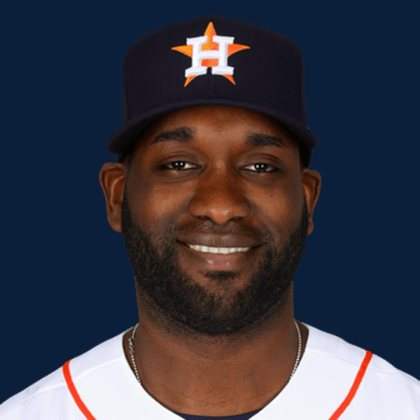

BASE KEEP
The Keep · The Diamond · The Farm
Player File · DH HOU

Yordan Alvarez
#44 · DH · Houston Astros · age 29 · B/T LR · 6' 4" / 237 lbs · MLB debut 2019 · Las Tunas, Cuba
Keep avg21.48
# Boards23
BK Value6,815
Spread7-40
Hitting
| Year | G | AB | R | H | 2B | HR | RBI | SB | BB | SO | AVG | OBP | SLG | OPS |
|---|---|---|---|---|---|---|---|---|---|---|---|---|---|---|
| 2026 | 125 | 454 | 83 | 144 | 25 | 36 | 88 | 1 | 86 | 95 | .317 | .430 | .610 | 1.040 |
| 2025 | 48 | 165 | 17 | 45 | 8 | 6 | 27 | 1 | 28 | 33 | .273 | .367 | .430 | .797 |
The Keep#21BK 6,815
The Lineup#16BK 7,367
The Diamond#21BK 6,815
The 2026 line
Keep #21 · avg 21.48 · 23 boards · .317 / 36 HR / 1 SB / 1.040 OPS
Baseball Savant
Starcast · spray · pitch
Percentile ranks (Starcast) plus the official Savant spray chart for bats and pitch chart for arms. Open the full Baseball Savant page.
Batter · 2026
xwOBA
100
xBA
100
xSLG
100
xISO
100
xOBP
100
Barrels
100
Barrel %
99
EV
99
Max EV
100
Hard Hit %
97
K %
73
BB %
97
Whiff %
74
Chase %
60
Speed
5
Arm
41
Bat Speed
92
Squared Up
66
Swing Len
80
Hits spray chart
Board graph
Spread 7-40 · 23 sources
Every Board
Spread 7-40 · 23 sources
| Source | Rank |
|---|---|
| RotoGraphs Model | 7 |
| RotoWire | 15 |
| FanGraphs The Board | 15 |
| The Athletic | 16 |
| FantasyPros Dynasty ECR | 18 |
| ESPN | 20 |
| CBS Sports | 20 |
| NFBC ADP | 20 |
| Ottoneu | 20 |
| Mastersball | 20 |
| Yahoo Fantasy | 20 |
| ATC ROS | 20 |
| Fantasy Baseballers | 22 |
| Baseball Prospectus | 23 |
| The Dynasty Dugout | 23 |
| Baseball America | 23 |
| MLB Pipeline mix | 23 |
| Razzball | 24 |
| Enos Slaughter | 24 |
| Pitcher List | 26 |
| Four-Seam Fantasy | 27 |
| Dynasty League Baseball | 28 |
| TDG Points | 40 |
BK News
- Today’s Best MLB Home Run Prop Bets: Top 5 including Junior Caminero, Pete Alonso and more for April 10, 2026
- Free MLB home run picks September 4: Braves' Matt Olson among expert's best bets for Friday
All players · The Keep · The Farm · The Diamond · BK News · The Lineup · Pitchers · Calculator